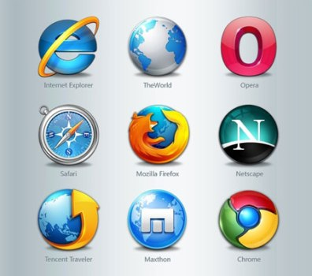
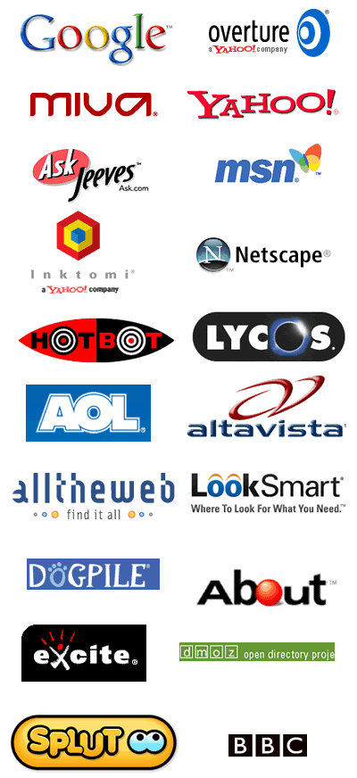
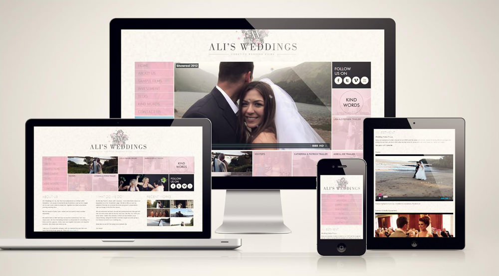
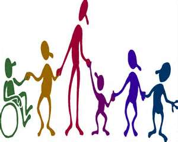
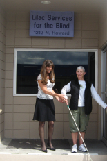
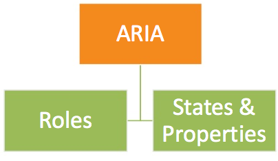
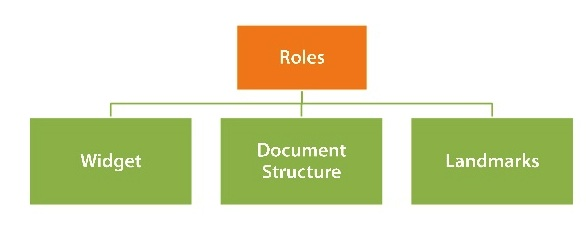

Inclusive Design challenges with UI Widgets
By Prem Nawaz Khan (@mpnkhan)
Accessibility Evangelist at PayPal (@PayPalInclusive)
Things we Bother
Browser compatability

Things we Bother
Do we code like this?
#wrapper {
min-height: 500px; /* IEwin does not support min-height */
height: 500px;
* height:496px;
_height: 500px;
}
html>body #wrapper {
height: auto;
}
Or like this?
<!--[if IE 8]><link media="screen" rel="stylesheet" type="text/css" href="ie8.css"><![endif]-->
<!--[if IE 7]><link media="screen" rel="stylesheet" type="text/css" href="ie7.css"><![endif]-->
<!--[if lte IE 6]><link media="screen" rel="stylesheet" type="text/css" href="ie6.css"><![endif]-->
Things we Bother
Search Engines
Things we Bother
Responsive Web Design

Things we Bother
/* Large desktop */
@media (min-width: 1200px) { ... }
/* Portrait tablet to landscape and desktop */
@media (min-width: 768px) and (max-width: 979px) { ... }
/* Landscape phone to portrait tablet */
@media (max-width: 767px) { ... }
/* Landscape phones and down */
@media (max-width: 480px) { ... }
References: Beyond Media Breakpoints Determing Breakpoints Responsive Design
Do we Ever Care?
 Why We Do Need to Care?
- Equal opportunity
- Old People
- People not fluent in the language
- Search engine optimization (SEO)
- Buying power of persons with disabilities
- Policy
Reference: Business Case for your Organization
Why We Do Need to Care?
As a Developer the Real Business case is "Quality-of-work" issue. We are not paid extra for cross-browser compatibility, Security, SEO , Responsive Web Design, etc. Similarily we are not paid for Accessibility, either

Every kid should have fun like this
How People With Disabilities (PWD) use the web?
Assistive Technologies (AT)
Keyboard only, by people with cognitive, physical, and visual disabilities
Touch screen only, by people with cognitive and physical disabilities
Voice recognition (speech input) and other hands-free interaction
Screen readers, Magnifier, Refreshable braille display, Alternative keyboard and mouse, Eye tracking, Keyboard customization, Keyboard and mouse filters, On-screen keyboard, Spelling and grammar tools, Voice recognition, Word prediction
How Person with Disability use Web
Most Impactful Accessibility Challenges :
-
Problematic items identified are (in order, with most difficult/frustrating first):
- The presence of inaccessible Flash content
- CAPTCHA - images presenting text used to verify that you are a human user
- Links or buttons that do not make sense
- Images with missing or improper descriptions (alt text)
- Screens or parts of screens that change unexpectedly
- Complex or difficult forms
- Lack of keyboard accessibility
- Missing or improper headings
- Too many links or navigation items
- Complex data tables
- Inaccessible or missing search functionality
- Lack of "skip to main content" or "skip navigation" links
Few things to know :
- Hiding Content with CSS
- tabIndex:
- Show focus
- Device Independent Event Handlers
- Aria Attributes
- Label
Hiding Content with CSS
.hidden{
display: none; /* Content ignored by SR */
}
/* Old */
.offscreen { /*jump effect, if focusable content within the positioned element */
position: absolute;
left: -999em;
}
/* New */
.offscreen {
position: absolute !important;
clip: rect(1px 1px 1px 1px); /* IE6, IE7 */
clip: rect(1px,1px,1px,1px);
}
tabIndex
Tabindex is to define the order in which elements will receive focus when navigated by the user via the keyboard
- tabIndex can have the following values :
- "-1" => Can use element.focus(). Element will not in tabFlow
- "0" => Element will be in tab flow + can use element.focus()
- "positive integer" => Places element above tabIndex 0
Event Handlers
- Use onFocus, onBlur, onSelect, onChange, and onClick (when onClick is used with link or form elements)
- onMouseOver, onMouseOut, and onDblClick rely upon the use of a mouse
- onKeyDown, onKeyUp, etc. rely upon Keyboard
Show focus (always)
Do NOT do this
a {
outline: 0 none;
}
One of the reasons could be because of using old version of Eric Meyer's Reset.css
Instead, do this
button:focus {
outline: dotted 1px #000;
}
Reference: http://outlinenone.com/
Accessible Rich Internet Applications (Aria)
Aria Roles
States and Properties
-
States and properties are categorized as follows
- Widget Attributes (Eg. aria-haspopup, aria-hidden)
- Live Region Attributes (Eg. aria-live)
- Drag-and-Drop Attributes (Eg. aria-dropeffect, aria-grabbed)
- Relationship Attributes (Eg. aria-describedby, aria-controls)
Aria Overview
- Passes Important Information to screen reader
- Does NOT change the presentation or behavior of the Web page to sighted users
- Does NOT makes the element focusable
- Does NOT makes it Keyboard Accessible
Labelling
- aria-labelledby = "elemID"
- aria-label = "label text"
- Associated label (<label for=“myControl”>) or alt attribute
- Text contents
- Title attribute
- aria-describedby = "elemID" for additional info
Ajax Updates
- aria-live="off | polite | assertive"
- aria-atomic="true | false" - read the entire region or only what has changed
- aria-relevant =" additions | removals | text | all" -
<div aria-live="polite" aria-relevant="additions" aria-atomic="true"> Ajax Updates</div>
Implicit live roles:
<div role="alert" id="errMsgId"> Important Error Message</div>
<output role="status"></output>
Accessible Button?
Eg. Element which looks like Button: Call to Action Button
<span class="btn"> Call to Action Button </span>
Adding tabIndex of "0" and Role Button Call to Action Button
<span role="button" tabIndex="0" class="btn"> Call to Action Button </span>
Add Some Focus Styles Call to Action Button
span.btn:hover, span.btn:focus {
text-shadow: -1px -1px 2px #465f97;
background: -moz-linear-gradient(#245192, #1e3b73 75%, #12295d);
background: -webkit-gradient(linear,left top,left bottom,color-stop(0, #245192),color-stop(.75, #1e3b73),color-stop(1, #12295d));
border: 1px solid #0f2557;
}
Accessible Button (contd)
We would need to add some JS for handling KeyDown
keydown: function(e) { // Trigger the click event from the keyboard
var code = e.which;
if ((code === 13) || (code === 32)) { // 13 = Return, 32 = Space
$(this).click();
}
},
But this is Better , Isn't it?
<a role="button" tabIndex="0" class="btn"> Call to Action Button </a>
<button class="btnA">Call to Action Button</button>
Accessible Tooltip
<span title="" onmouseover="showTip('desc');" onmouseout="hideTip('desc');">tooltip </span>
<div class="ui-tooltip" id="desc">Some Tooltip Text</div>
Add tabIndex 0 or use anchor
<span title="" tabIndex="0" onmouseover="showTip('desc');"
onmouseout="hideTip('desc');">tooltip </span>
<div class="ui-tooltip" id="desc">Some Tooltip Text</div>
Add Keyboard support
<span title="" tabIndex="0" aria-describedBy="desc"
onmouseover="showTip('desc');"
onmouseout="hideTip('desc');"
onfocus="showTip('desc');"
onblur="hideTip('desc');">tooltip </span>
<div class="ui-tooltip" id="desc" role="tooltip>Some Tooltip Text</div>
Aria-describedby and role="tooltip"
<span title="" tabIndex="0" aria-describedBy="desc"
onmouseover="showTip('desc');"
onmouseout="hideTip('desc');">tooltip </span>
<div class="ui-tooltip" id="desc" role="tooltip>Some Tooltip Text</div>
Accessible Drop Down
<a href="#" id="drop1" class="dropdown-toggle" data-toggle="dropdown">Dropdown</a>
<ul class="dropdown-menu" id="menu1">
<li><a href="#">New File</a></li>
<li><a href="#">Open...</a></li>
<li><a href="#">New Window</a></li>
</ul>
Adding tabIndex, Menu, Menu Item and Presentation roles
<a href="#" role="button" aria-haspopup="true" aria-expanded="false" id="drop1" class="dropdown-toggle" data-toggle="dropdown">Dropdown</a>
<ul aria-labelledby="drop1" role="menu" class="dropdown-menu" id="menu1">
<li role="presentation"><a href="#" role="menuitem" tabindex="-1">New File</a></li>
<li role="presentation"><a href="#" role="menuitem" tabindex="-1">Open...</a></li>
<li role="presentation"><a href="#" role="menuitem" tabindex="-1">New Window</a></li>
</ul>
Accessible Drop Down (Contd.)
- Set aria-expanded to true and dynamically manage aria-expanded state
- Set focus to first item on Menu.
if (!isActive) {
$parent.toggleClass('open')
setTimeout(function(){
$('[role=menu] li a', $parent)[0].focus()
},100)
$parent.find(toggle).attr('aria-expanded', true)
}else $parent.find(toggle).attr('aria-expanded', false)
Listen to KeyDown event and navigate with up/down arrow cycle thru Menu items
$(document).on('keydown.dropdown.data-api', toggle + ', [role=menu]'
, Dropdown.prototype.keydown)
, keydown: function (e) {
index = $items.index($items.filter(':focus'))
if (e.keyCode == 38) index-- // up
if (e.keyCode == 40) index++ // down
if(index < 0) index = $items.length -1;
if(index == $items.length) index = 0;
$items
.eq(index)
.focus()
}
Accessible Drop Down (Contd.)
Close on Esc Key and on Focus Out
, keydown: function (e) {
if (!isActive || (isActive && e.keyCode == 27))
return $parent.find(toggle).click().focus()
}
.on('focusout.dropdown.data-api', '.dropdown-menu', function(e){
var $this = $(this)
setTimeout(function() {
if(!$(document.activeElement).is($this.find("a"))){
clearMenus()
}
}, 150)
})
Accessible Dialog
Dialog boxes, in Most cases is an accessibility disaster
- Aria Roles of Dialog
- aria-labelledBy to label the Dialog
- Set focus to the dialog
- Trap focus within the dialog
- Close on Esc Key
- Return the focus to the opener element, safely.
Summary
- Accessibility is a "quality-of-work" issue
- It is Easy to make the widgets Accessible
- Make your page Accessible first and them make your widgets Accessible
- If you must use some thirdparty library, fork it, clone it and make it Accessible or make it Accessible in your clone
Anything Else ?
- Questions?
- Few A11Y examples using Twitter BootStrap
- Twitter (@mpnkhan)